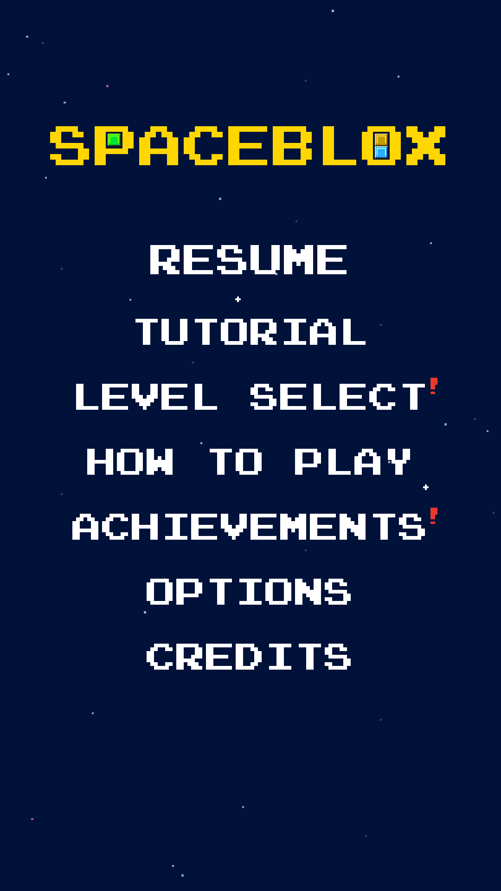
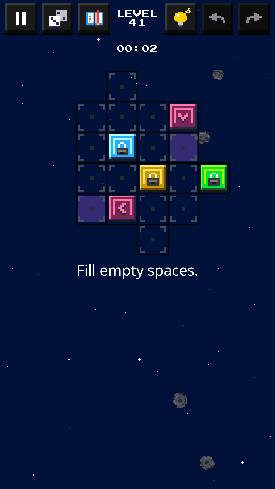
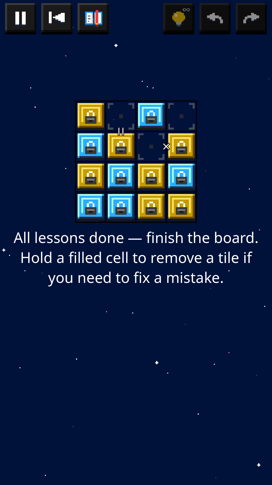
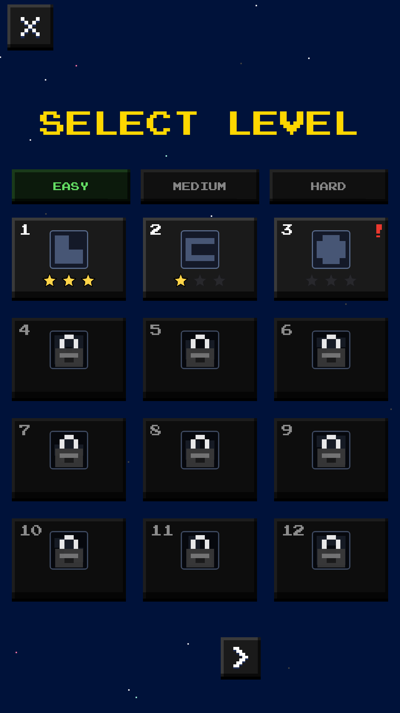
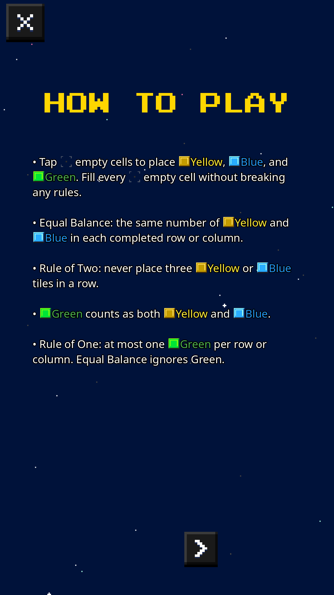
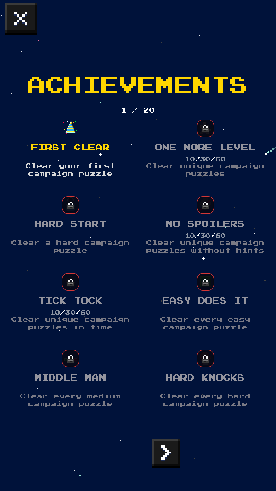
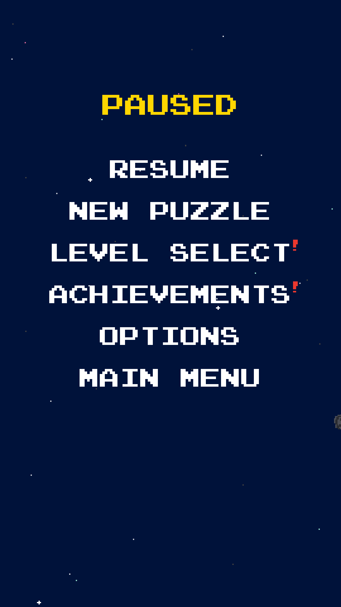
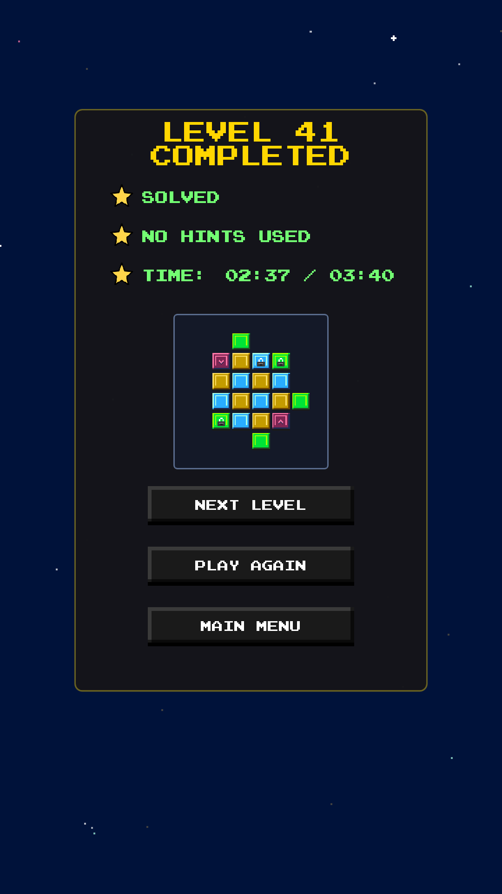

A calm color-logic puzzle set in soft pixel space.
Play free in your browser or on Android.
Spaceblox gives you a grid with a few colored tiles already in place and asks you to fill every empty cell. That sounds simple, but each color follows its own rules. Yellow and blue must stay balanced on every line, no color may appear three times in a row, green counts as two colors at once, and purple tiles hop between linked cells. A full board that breaks no rules clears the level.
There is no luck involved: every puzzle can be solved by careful reasoning. The game marks broken rules with a red highlight as you play, so you always know where a problem is, and you can undo, redo or ask for a hint whenever you need one.
How to play, step by step
- Start with the tutorial. The first time you press Play, Spaceblox offers a guided tutorial. It introduces one rule at a time on small boards and lets you practise each one before moving on. You can replay it any time from the main menu.
- Look at the board. Some cells already hold tiles. Tiles with a lock icon are fixed and cannot be changed — they are your starting clues.
- Place tiles. Tap (or click) an empty cell to cycle through the colors: Yellow, then Blue, then Green. Stop on the color you want.
- Fix mistakes. Press and hold a filled cell to clear it, or use Undo and Redo in the top bar. Restart puts the board back to its starting layout.
- Watch for red. If a placement breaks a rule, the affected cells are highlighted in red. Change one of them to resolve the conflict.
- Slide purple tiles. On boards with purple tiles, tap a purple tile to hop it along its arrow to the linked cell.
- Fill the last cell. When every cell is filled and no rule is broken, the level is solved and you see how many stars you earned.
- Need the rules again? The How to Play button opens the full rule guide with valid and invalid examples at any time, even mid-level.
The rules
Core rules (yellow and blue)
- Rule of Two: never place three tiles of the same color next to each other in a row or column. Two yellows side by side are fine; a third is not.
- Equal Balance: every completed row and column must contain the same number of yellow and blue tiles.
Green tiles
- Green counts as both yellow and blue for the Rule of Two. So a green next to two yellows makes "three yellows", and yellow–green–yellow is also a run of three.
- Rule of One: a row or column may contain at most one green tile.
- Equal Balance ignores green. Green fills a cell without adding to the yellow or blue count, which is exactly what makes odd-length lines (3, 5 or 7 cells) possible to balance.
Purple tiles (shifters)
- A purple tile sits between two linked cells. Tap it to slide it along the arrow to the other cell.
- Another purple tile on the destination cell blocks the move — clear that path first.
- Like green, purple fills a cell without counting toward Equal Balance.
Locks and links
- Lock icon: the tile is fixed.
- = between two cells: both cells must be the same color.
- × between two cells: the two cells must be different colors.
Stars, hints and progression
Each campaign level has up to three star goals:
- Solved — finish a valid board.
- No hints used — finish without using a hint.
- Time — finish within the level's time limit. Running out of time never ends the level; it only means this star stays empty. On boards with purple tiles, a star can instead ask you to use no more than a set number of purple hops.
Stars are optional. You can clear a level with one star and come back later to collect the rest.
Hints reveal a helpful "=" or "×" clue on the board. Each level gives you a small number of hints (more on harder levels). If you run out, you can choose to watch an optional ad to receive three more hints.
The campaign runs across easy, medium and hard levels, unlocking as you go, so the rules build up gradually from small boards to larger ones with green, purple and linked cells. Achievements reward milestones, star goals and a few secret feats, with bronze, silver and gold tiers to track on the Achievements screen (in the browser version now, and on Android from the upcoming 1.1.0 update).
SCREENSHOTS








Features
- Guided, step-by-step tutorial
- Campaign with easy, medium and hard levels
- Full in-game rule guide with examples
- Hints, unlimited undo and redo, restart and hold-to-clear
- Three optional star goals per level
- Achievements with bronze, silver and gold tiers, plus hidden ones*
- Optional colorblind tile patterns and screen-reader labels*
- Dynamic or static space background, music and sound-effect settings
- Mid-level progress is saved, so you can continue where you left off
- On Android: optional Google Play Games sign-in for cloud save and achievements*
* Available in the browser version now (cloud save excepted) and coming to Android with version 1.1.0.
Controls
- Phone or tablet: tap an empty cell to cycle Yellow → Blue → Green; press and hold a filled cell to clear it; tap a purple tile to slide it.
- Browser: the same actions with the mouse — click a cell to cycle colors, click and hold a filled cell for about a second to clear it, and click a purple tile to slide it. On a touchscreen, tap and hold work just like on a phone.
- Top bar: Pause, Restart, How to Play (rules), Hint, Undo and Redo.
Platforms and languages
- Android: Google Play — free, contains ads. Released on 1 September 2026.
- Web browser: play here — free, runs in a modern browser on desktop or mobile; the game is laid out in portrait. Cloud save is not available in the web version.
- Languages: English, Spanish, German, French, Polish, Georgian and Ukrainian.
- Built with the Godot engine.
Tips and strategy for beginners
1. Hunt for pairs first. Whenever two cells of the same color sit next to each other in a line, the cells on either side of that pair must be the other color. This is the single most useful deduction in the game and often unlocks a whole row.
2. Fill the gap in a sandwich. If you see yellow, empty, yellow, the gap must be blue (and vice versa). Three in a row is broken whether the middle tile arrives first or last.
3. Count to the halfway point. In a six-cell line without green, Equal Balance means exactly three yellows and three blues. Once one color reaches three, every remaining empty cell in that line must be the other color.
4. Odd lines need a special tile. Yellow and blue must be equal, so their total is always even. A line with an odd number of cells therefore needs a green or purple tile somewhere in it. Because there can be only one green per line, finding where that green goes is often the key to an odd-sized board.
5. Treat green as a wildcard that can block itself. Green counts as both colors for the Rule of Two, so it can never sit directly beside a same-color pair (yellow-yellow-green or blue-blue-green) or between two matching tiles (yellow-green-yellow). Green is easiest to place next to mixed neighbours.
6. Use links as shortcuts. An "×" link on a yellow/blue board means the two cells are opposites, so knowing one tells you the other. Chains of "=" and "×" links let you carry information across the grid.
7. Move purple tiles early. Sliding a purple tile changes which cell is empty. Decide where each shifter should rest before filling its neighbours, and remember a shifter can be blocked by another one.
8. Let red highlights teach you. A red line shows exactly which rule broke. Rather than guessing, undo and ask which rule the red cells are breaking.
9. Save hints for real dead ends. Solving without hints earns a star. If you are stuck, scan every row and column for pairs and halfway counts once more before tapping Hint.
FAQ
Is Spaceblox free?
Yes. Spaceblox is free to play on Android and in the browser. It is supported by ads, and you can optionally watch an ad to get extra hints.
Do I need an account?
No. Progress is saved on your device. On Android, version 1.1.0 adds optional Google Play Games sign-in to sync progress and achievements.
Is there a timer?
Each level has a time limit only for the optional time star. A level never fails when time runs out: you can take as long as you like and still solve it — you just won't earn that star.
Is every puzzle solvable without guessing?
The puzzles are designed to be solved by logic. If you feel you must guess, look again for pairs, sandwiches and halfway counts — or use a hint.
Will my browser progress carry over to the Android app?
No. The web version saves in your browser's own storage on that device, and cloud sync is only available in the Android app.
Is Spaceblox playable with color blindness?
Spaceblox has an optional colorblind mode that adds patterns to the tiles, so colors can be told apart by shape as well as color.
TRAILER
Loads from YouTube (privacy-enhanced mode) when you press play.